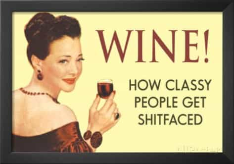
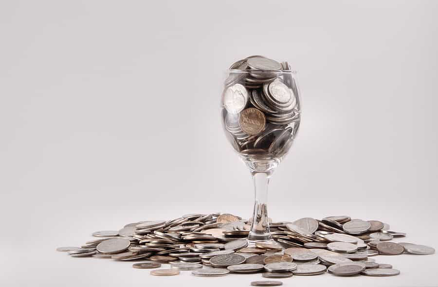
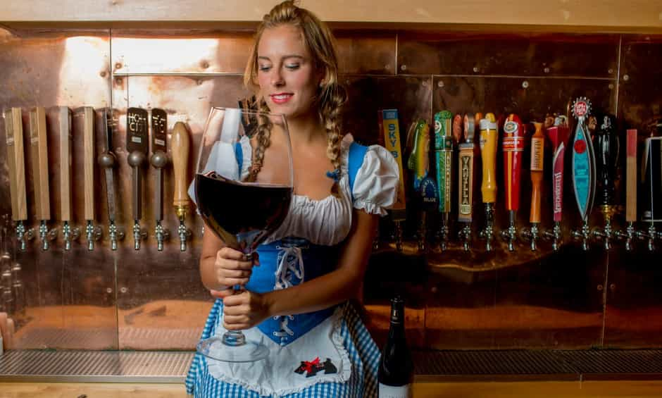
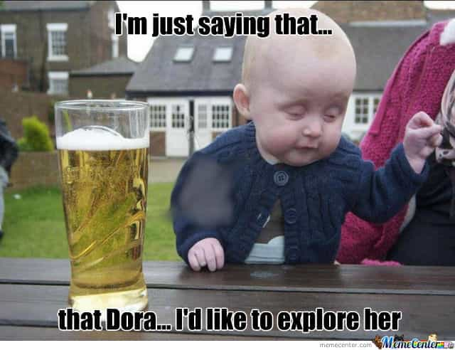

< < < Back
5 Reasons To Have Wine On A Date – Return Of Kings
Whether you are sharing a beer with your mates or cocktails with the ladies, alcohol has truly become one of the defining features of the human experience. Today we are faced with a plethora of choice from craft beers to exotic spirits. With so much variety we should feel empowered, but more often than not we see it as an obstacle, ultimately choosing to fall back on our old favourites.
In the past decade another competitor has been thrown into the ring: Wine. With reds, whites, rosés, sparkling, dessert, and fortified styles on offer from all around the world, there is now even more diversity. By being aware of a few key points, you will find that wine actually offers a lot of value.
Before I begin, a few points to consider:
i) This article is written in the context of being on a second or third date. Wine is more conducive to creating a casual social experience and building rapport. Anyone who tells you to splash out $100+ on a California Cabernet to attract some girl’s attention is trying to sell you something.
ii) This article is not arguing that wine is somehow better than spirits or beers. I’m partial to craft beers and the occasional Old-Fashioned myself. There’s a time, place and occasion for everything.
With that taken care of, let’s get into the 5 reasons why getting a bottle of wine is a good bet:

1. Wine Is Classier
Wine has benefited from a great marketing campaign for the past few decades, and there’s no denying that its public image is tied to the finer things in life.
Imagine you are in a bar or lounge. You spot a man having drinks with a woman. If they’re drinking beers, they’re probably just friends hanging out. If they’re drinking cocktails, the guy wants to get laid and the girl might just be fishing for drinks.
But if they’re drinking wine? They’re a couple of people having a good time, getting to know each other, and in a few hours the guy might tell his date “Hey, I’ve got this cool wine I brought back from Italy that you can’t find anywhere else, let’s bounce back to my place…”
Don’t be a snob. Relax, be social and act with grace.

2. Wine Is Cheaper
If you’re similar to me and like to have a good time, you’re not just going to order one Old Fashioned and call it a night. You’ll be ordering a Mojito next, followed by a Margarita, then a Daiquiri for dessert. Things add up if you feel the situation calls for buying drinks for your date as well.
After doing some research it seems the average cost of a cocktail is around $10. At more upscale places this could quickly rise to $15-$20. You’re looking at spending $40-$80 at the least.
In contrast, most venues will have wines available for around $10-$15 by-the-glass. But the secret to getting value lies in buying full bottles. The full-bottle price of these offerings are usually three to four times the glass price, yet you can get up to five pours from one bottle. In effect, ordering a bottle is like taking advantage of a promotion—buy four glasses, get one free.
So if you’re committed to spending $40-$80 anyway, a bottle of wine (or two) will take you a long way. Don’t be sidetracked by the more expensive offerings on the list, as price is no guarantee of quality.
3. Fewer Interruptions
Imagine you’re sitting on a lounge with your date. You’re having a good time, talking about love and the secrets of the universe when she suddenly points out that both your cocktail glasses are empty. You take hers and say “I’ll be right back.”
The line to the bar is three people deep. You’re there for what feels like an hour. By the time you’ve gotten your two Vodka Martinis you turn around and begin to walk back… only to see your date being chatted up by some 6’3” suited-up son-of-a-bitch. And from the way you see her giggling at his every word, she’s enjoying it.
And what are you doing? Standing there holding onto two Vodka Martinis like a drunken chump, that’s what. Sure, maybe you’re Don Draper you can go up and tell the guy not-so-politely to leave, but the love bubble you had painstakingly built has popped, and the atmosphere has changed.
A bottle of wine solves this problem simply. Her glass is empty? Smoothly pick up the bottle and pour her another measure.

4. You Drink More
I’ve mentioned before that you can typically get up to five pours from one bottle. What if I told you that it could be stretched to 8-10 glasses?
All you have to do is pour less each time. I like to use two or three fingers to measure the height of the liquid in the glass. With practice, you don’t even need the fingers to measure, free pouring perfectly each time.
If anyone (like your date) asks why you are drinking so slowly, tell them you just like to take your time to appreciate the wine. Less liquid in the glass means you can swirl more vigorously, releasing more aromas. And why is everyone in a rush to drink? Why not slow down and have a good time? Smile confidently as you say this.
Make a game out of it. Teach her how to engage the senses. What colours do you see? What do you smell? What do you taste? How does it feel in your mouth (heh)?

5. You Drink Less
Most wines hover around 10%-15% alcohol by volume. Compare this to most spirits which regularly go over the 40% mark.
If you’re on a date, you don’t want to impair your judgement just because you’ve had one drink too many. Just one badly calibrated move can result in you scaring the cat. After a few shots of tequila, your calibration might be off. Is now the right time to go for the kiss? Have you built up enough rapport? Was that her licking her lips or just a nervous tic?
With wine, you are free to moderate your intake by pouring less (Tip #4, above), basking in that comfortable zone between mundane sobriety and total inebriation. Have a conversation. Flirt a little. Sit back, relax, and smell the rosés. There’s more to life and seduction than furiously banging out one-night stands in club bathrooms.
Conclusion
While this article is framed around the scenario of you being on a third date with an attractive young lady, you will find it just as applicable if you’re having a business lunch with an important client or a good time with friends. Your only problem now is finding a wine that you will actually enjoy. No one wants to order the second-cheapest bottle on the list and end up being disappointed. For more information about what styles of wine are right for you, check out my Personal Wine Consultation service.
Read More: A Basic Guide To Selecting Wine For Women